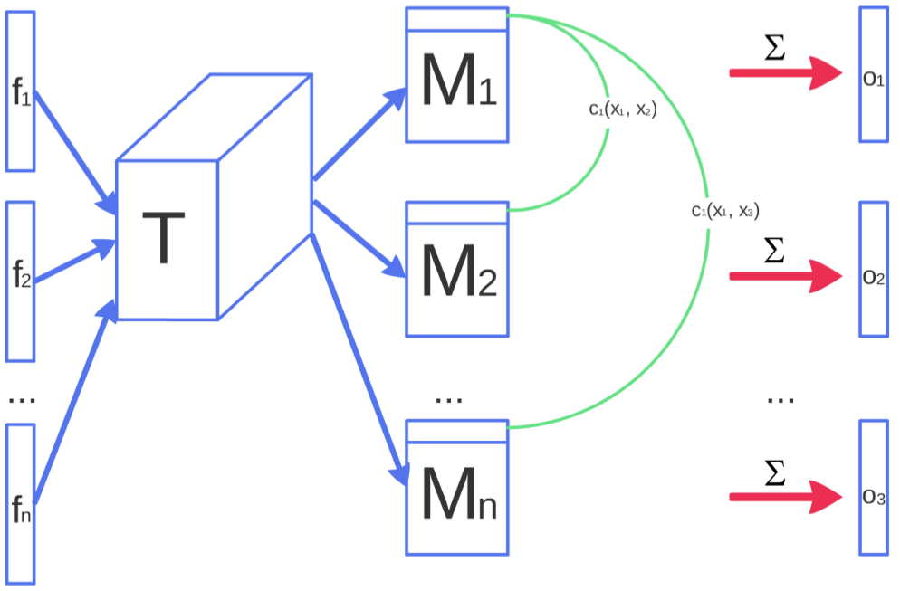

class: center, middle # Generative Adversarial Networks by _Roozbeh Farhoodi_ at klab weekly meeting --- ### Download tutorial - [Github repository](https://github.com/KordingLab/lab_teaching_2016) - [IPython notebook](http://nbviewer.jupyter.org/github/KordingLab/lab_teaching_2016/blob/master/session_2/xgboost_tutorials.ipynb) --- ### Generative models “Generative modeling” is a broad area of machine learning which deals with models of distributions `\(\mathbb{P}(X)\)`, defined over datapoints X in some potentially high-dimensional space `\(\Theta\)` ### Motivations - New samples from a dataset: generating natural images - completing the incomplete data --- ### variational autoencoder (VAE) [more](https://arxiv.org/pdf/1606.05908v2.pdf) --- ### GAN [Goodfellow et al, 2014](https://arxiv.org/pdf/1406.2661v1.pdf) .center[] `\(D\)` and `\(G\)` play the following two-player minimax game with value function `\(V(G, D)\)`: `\(\min_G \max_D V(D, G) = \mathbb{E}_{x \sim p_{\text{data}}({x})}[\log D({x})] + \mathbb{E}_{{z} \sim p_{{z}}({z})}[\log (1 - D(G({z})))]\)` --- ### Example .left[<img src='images/fig1.pdf' width="170px"/> <img src='images/fig2.pdf' width="170px"/><img src='images/fig3.pdf' width="170px"/><img src='images/fig4.pdf' width="170px"/>] The lower horizontal line is the domain from which z is sampled. The horizontal line above is part of the domain of x. The upward arrows show how the mapping x = G(z) imposes the non-uniform distribution `\(p_g\)` on transformed samples. G contracts in regions of high density and expands in regions of low density of pg. (a) Consider an adversarial pair near convergence: pg is similar to pdata and D is a partially accurate classifier. (b) In the inner loop of the algorithm D is trained to discriminate samples from data, converging to D(x) = pdata(x) pdata(x)+pg(x) . (c) After an update to G, gradient of D has guided G(z) to flow to regions that are more likely to be classified as data. (d) After several steps of training, if G and D have enough capacity, they will reach a point at which both cannot improve because pg = pdata. The discriminator is unable to differentiate between the two distributions, i.e. D(x) = 1/2 . --- .center[**Generative and Discriminative**] .center[] --- ## Variations .left[] - dcGAN - InfoGAN - AC-GAN - EB-GAN - ... --- ## DC-GAN [**Alec Radford and Luke Metz et al, 2016**](https://arxiv.org/pdf/1511.06434.pdf) .center[] "We propose and evaluate a set of constraints on the architectural topology of Convolutional GANs that make them stable to train in most settings. We name this class of architectures Deep Convolutional GANs (DCGAN)" --- ## DC-GAN Architecture guidelines for stable Deep Convolutional GANs - Replace any pooling layers with strided convolutions (discriminator) and fractional-strided convolutions (generator). - Use batchnorm in both the generator and the discriminator. - Remove fully connected hidden layers for deeper architectures. - Use ReLU activation in generator for all layers except for the output, which uses Tanh. - Use LeakyReLU activation in the discriminator for all layers. --- ## Info-GAN [**Xi Chen et al, 2016**](https://arxiv.org/pdf/1606.03657v1.pdf) "The GAN formulation uses a simple factored continuous input noise vector z, while imposing no restrictions on the manner in which the generator may use this noise. As a result, it is possible that the noise will be used by the generator in a highly entangled way, causing the individual dimensions of z to not correspond to semantic features of the data." --- ## Info-GAN Solution: Introducing the latent variable `c` and modifying: .center[] the second term can be approximated by: .center[] Which can be approximated again by Monte Carlo simulations. .center[] --- ## AC-GAN [**Augustus Odena et al, 2016**](https://arxiv.org/pdf/1610.09585v1.pdf) "GANs struggle to generate globally coherent, high resolution samples - particularly from datasets with high variability." --- ## EBGAN [**Junbo Zhao et al, 2016**](https://arxiv.org/pdf/1609.03126v2.pdf) --- ### Remedies - **Freezing learning:** Frequently either the generator or discriminator will outpace the other and the GAN will get stuck in a degenerate solution. One simple remedy is to freeze learning in one model when it begins to get too strong. [See here](https://arxiv.org/pdf/1610.01945.pdf?utm_content=buffer13ebb&utm_medium=social&utm_source=facebook.com&utm_campaign=buffer) - **Label smoothing:** A simple trick to prevent gradients from vanishing when the discriminator’s predictions are very confident, label smoothing replaces `\(0 : 1\)` labels with `\(\epsilon : 1 - \epsilon\)`, which guarantees the generator will always have informative gradients. - **Minibatch discrimination:** To prevent the generator from collapsing onto a single sample, minibatch discrimination extends the role of the discriminator from classifying single images to classifying entire minibatches.[See here](https://arxiv.org/abs/1606.03498) --- ### Remedies - **Batch normalization:** Batch normalization has been critical for scaling GANs to deep convolutional networks, and virtual batch normalization has extended this by using a constant reference batch to prevent correlations in predictions due to the other elements of the minibatch.[See here](https://arxiv.org/pdf/1511.06434v2.pdf) and [here](https://arxiv.org/pdf/1502.03167v3.pdf) .center[] --- ### Evaluation of Generative models https://arxiv.org/pdf/1511.01844v3.pdf --- ### tutorial's talk .center[<iframe width="560" height="315" src="https://www.youtube.com/embed/KeJINHjyzOU" frameborder="0" allowfullscreen></iframe>] --- ### let's generate images .center[] --- class: center, middle # Questions and Discussion